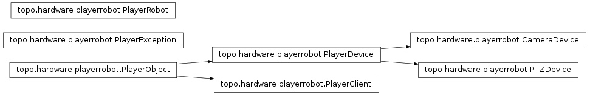
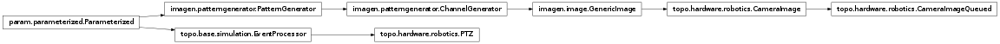

topo.hardware Package¶
opencvcamera Module¶

A class for grabbing frames from the camera. In order to grab frames, you need to install Opencv, and python-opencv (Python bindings for the computer vision library).
This class was tested with Opencv 2.0.0 and Ubuntu 10.04 LTS.
playerrobot Module¶

High-level interface to the Player client libraries.
The Player client libraries allow Python code to communicate with hardware devices such as robots, cameras, and range sensors.
This is a temporary home for this file until it finds a permanent home (maybe in the PlayerStage project or in PLASTK?)
- class topo.hardware.playerrobot.CameraDevice(proxy, lock)[source]¶
Bases: topo.hardware.playerrobot.PlayerDevice
A Player camera device.
The synchronized method get_image grabs an uncompressed snapshot, along with the additional formatting information needed to make an image.
- get_image()[source]¶
- Returns the tuple:
- (format,width,height,bpp,fdiv,data)
Where data is a copy of the uncompressed image data.
- image¶
- Returns the tuple:
- (format,width,height,bpp,fdiv,data)
Where data is a copy of the uncompressed image data.
- class topo.hardware.playerrobot.PTZDevice(proxy, lock)[source]¶
Bases: topo.hardware.playerrobot.PlayerDevice
Player Pan/Tilt/Zoom (PTZ) device.
Adds the following to the original proxy interface:
state = The tuple (pan,tilt,zoom) indicating the current state of the PTZ device.
state_deg = Same as state, but returns values in degrees instead of radians
set_deg() and set_ws_deg() methods. Same as .set() and .set_ws(), using degrees instead of radians.
- class topo.hardware.playerrobot.PlayerClient(proxy, lock)[source]¶
Bases: topo.hardware.playerrobot.PlayerObject
Player object wrapper for playerc.client objects.
- class topo.hardware.playerrobot.PlayerDevice(proxy, lock)[source]¶
Bases: topo.hardware.playerrobot.PlayerObject
Generic Player device object.
Overrides the default proxy .subscribe method so that the mode defaults to PLAYERC_OPEN_MODE.
- class topo.hardware.playerrobot.PlayerObject(proxy, lock)[source]¶
Bases: object
A generic threadsafe wrapper for client and proxy objects from the playerc library.
PlayerObject wrappers are constructed automatically by PlayerRobot objects. Each PlayerObject instance wraps a playerc device proxy or client object, and publishes a thread-safe version of each of proxy’s methods, that is synchronized with the PlayerRobot instance’s run-loop thread, and that catches playerc error conditions and raises them as PlayerExceptions. The original playerc proxy object is available via the attribute .proxy. Specialized subclasses of PlayerObject can have additional interfaces for getting device state or setting commands specific to that device.
Developer note: the PlayerObject base class __init__ method automatically wraps each method on the proxy that (a) doesn’t begin with ‘__’ and (b) is not already in dir(self). This way, subclasses can override the wrapping process by defining their own wrappers before the base class __init__ method is called.
- class topo.hardware.playerrobot.PlayerRobot(host='localhost', port=6665, speed=20, devices=[])[source]¶
Bases: object
Player Robot interface.
A PlayerRobot instance encapsulates an interface to a Player robot. It creates and manages a playerc.client object and a set of device proxies wrapped in PlayerDevice objects. In addition, it maintains a run-loop in a separate thread that calls the client’s .read() method at regular intervals. The devices are published through standard interfaces on the PlayerRobot instance, and their methods and properties are synchronized with the run thread through a mutex.
Example:
# set up a robot object with position, laser, and camera objects robot = PlayerRobot(host=’myrobot.mydomain.edu’,port=6665,
- devices = [(‘position2d’,0),
- (‘laser’,0), (‘camera’,1)])
# start the run thread, devices will be subscribed # automatically. robot.start()
# start the robot turning at 30 deg/sec robot.position2d[0].set_cmd_vel(0, 0, 30*pi/180)
# wait for a while time.sleep(5.0)
# all stop robot.position2d[0].set_cmd_vel(0,0,0)
# shut down the robot’s thread, unsubscribing all devices and # disconnecting the client robot.stop()
- topo.hardware.playerrobot.player_fn(error_op=<built-in function ne>, error_val=0)[source]¶
Player function decorator. Adds error checking.
Takes an operator and a value, and compares the result of the function call with the value using the operator. If the result is true, a PlayerException is raised. The default error condition is error_op = ne, error_value = 0, which raises an exception if fn(*args) != 0.
- topo.hardware.playerrobot.synched_method(f)[source]¶
Synchronized method decorator.
Like synchronized() decorator, except synched_method assumes that the first argument of the function is an instance containing a Lock object, and this lock is used for synchronization.
- topo.hardware.playerrobot.synchronized(lock)[source]¶
Simple synchronization decorator.
Takes an existing lock and synchronizes a function or method on that lock. Code taken from the Python Wiki PythonDecoratorLibrary:
ptz Module¶

A class for controlling pan/tilt and pan/tilt reset of a camera. In order to move the camera, you need to install UVCDYNCTRL, it is a Logitech software for webcam.
This class was tested with uvcdynctrl and Ubuntu 10.04 LTS.
robotics Module¶

Classes for using robotic or other hardware using Topographica.
This module contains several classes for constructing robotics interfaces to Topographica simulations. It includes modules that read input from or send output to robot devices, and a (quasi) real-time simulation object that attempts to maintain a correspondence between simulation time and real time.
This module requires the PlayerStage robot interface system (from playerstage.sourceforge.net), and the playerrobot module for high-level communications with Player robots.
- class topo.hardware.robotics.CameraImage(**params)[source]¶
Bases: imagen.image.GenericImage
An image pattern generator that gets its image from a Player camera device.
- param Number x (allow_None=False, bounds=None, constant=False, default=0.0, inclusive_bounds=(True, True), instantiate=False, pickle_default_value=True, precedence=0.2, readonly=False, time_dependent=True, time_fn=<Time Time00001>)
- X-coordinate location of pattern center.
- param Number scale (allow_None=False, bounds=None, constant=False, default=1.0, inclusive_bounds=(True, True), instantiate=False, pickle_default_value=True, precedence=0.1, readonly=False, time_dependent=True, time_fn=<Time Time00001>)
- Multiplicative strength of input pattern, defaulting to 1.0
- param String group (allow_None=False, basestring=<type ‘basestring’>, constant=False, default=Pattern, instantiate=False, pickle_default_value=True, precedence=-1, readonly=False)
- The group name assigned to the returned HoloViews object.
- param ClassSelector pattern_sampler (allow_None=False, constant=False, default=<PatternSampler PatternSampler00073>, instantiate=True, is_instance=True, pickle_default_value=True, precedence=None, readonly=False)
- The PatternSampler to use to resample/resize the image.
- param Boolean cache_image (allow_None=False, bounds=(0, 1), constant=False, default=False, instantiate=False, pickle_default_value=True, precedence=None, readonly=False)
- If False, discards the image and pattern_sampler after drawing the pattern each time, to make it possible to use very large databases of images without running out of memory.
- param Number orientation (allow_None=False, bounds=None, constant=False, default=0.0, inclusive_bounds=(True, True), instantiate=False, pickle_default_value=True, precedence=0.4, readonly=False, time_dependent=True, time_fn=<Time Time00001>)
- Polar angle of pattern, i.e., the orientation in the Cartesian coordinate system, with zero at 3 o’clock and increasing counterclockwise.
- param HookList channel_transforms (allow_None=False, bounds=(0, None), constant=False, default=[], instantiate=True, pickle_default_value=True, precedence=None, readonly=False)
- Optional functions to apply post processing to the set of channels.
- param ClassSelector z (allow_None=True, constant=False, default=None, instantiate=True, is_instance=True, pickle_default_value=True, precedence=-1, readonly=False)
- The Dimension object associated with the z-values generated by the PatternGenerator . If None, uses the default set by HoloViews.Image.
- param Parameter mask (allow_None=True, constant=False, default=None, instantiate=False, pickle_default_value=True, precedence=-1, readonly=False)
- Optional object (expected to be an array) with which to multiply the pattern array after it has been created, before any output_fns are applied. This can be used to shape the pattern.
- param BoundingRegionParameter bounds (allow_None=False, constant=False, default=BoundingBox(radius=0.5), instantiate=True, pickle_default_value=True, precedence=-1, readonly=False)
- BoundingBox of the area in which the pattern is generated.
- param Number xdensity (allow_None=False, bounds=(0, None), constant=False, default=256, inclusive_bounds=(True, True), instantiate=False, pickle_default_value=True, precedence=-1, readonly=False, time_dependent=True, time_fn=<Time Time00001>)
- Density (number of samples per 1.0 length) in the x direction.
- param Number y (allow_None=False, bounds=None, constant=False, default=0.0, inclusive_bounds=(True, True), instantiate=False, pickle_default_value=True, precedence=0.21, readonly=False, time_dependent=True, time_fn=<Time Time00001>)
- Y-coordinate location of pattern center.
- param HookList output_fns (allow_None=False, bounds=(0, None), constant=False, default=[], instantiate=True, pickle_default_value=True, precedence=0.08, readonly=False)
- Optional function(s) to apply to the pattern array after it has been created. Can be used for normalization, thresholding, etc.
- param Number offset (allow_None=False, bounds=None, constant=False, default=0.0, inclusive_bounds=(True, True), instantiate=False, pickle_default_value=True, precedence=0.11, readonly=False, time_dependent=True, time_fn=<Time Time00001>)
- Additive offset to input pattern, defaulting to 0.0
- param ClassSelector mask_shape (allow_None=True, constant=False, default=None, instantiate=True, is_instance=True, pickle_default_value=True, precedence=0.06, readonly=False)
- Optional PatternGenerator used to construct a mask to be applied to the pattern.
- param Composite position (allow_None=True, attribs=[‘x’, ‘y’], constant=False, default=None, instantiate=False, objtype=<class ‘imagen.patterngenerator.PatternGenerator’>, pickle_default_value=True, precedence=-1, readonly=False)
- Coordinates of location of pattern center. Provides a convenient way to set the x and y parameters together as a tuple (x,y), but shares the same actual storage as x and y (and thus only position OR x and y need to be specified).
- param Number ydensity (allow_None=False, bounds=(0, None), constant=False, default=256, inclusive_bounds=(True, True), instantiate=False, pickle_default_value=True, precedence=-1, readonly=False, time_dependent=True, time_fn=<Time Time00001>)
- Density (number of samples per 1.0 length) in the y direction. Typically the same as the xdensity.
- param Number aspect_ratio (allow_None=False, bounds=(0.0, None), constant=False, default=1.0, inclusive_bounds=(True, True), instantiate=False, pickle_default_value=True, precedence=0.31, readonly=False, time_dependent=True, time_fn=<Time Time00001>)
- Ratio of width to height; size*aspect_ratio gives the width.
- param ClassSelector camera (allow_None=True, constant=False, default=None, instantiate=True, is_instance=True, pickle_default_value=True, precedence=None, readonly=False)
- An instance of playerrobot.CameraDevice to be used to generate images.
- param Number size (allow_None=False, bounds=(0.0, None), constant=False, default=1.0, inclusive_bounds=(True, True), instantiate=False, pickle_default_value=True, precedence=0.3, readonly=False, time_dependent=True, time_fn=<Time Time00001>)
- Height of the image.
- anim(duration, offset=0, timestep=1, label=None, unit=None, time_fn=Time(label='Time', name='Time00001', time_type=<built-in function mpq>, timestep=1.0, unit=None, until=Infinity()))¶
duration: The temporal duration to animate in the units defined on the global time function.
offset: The temporal offset from which the animation is generated given the supplied pattern
timestep: The time interval between successive frames. The duration must be an exact multiple of the timestep.
label: A label string to override the label of the global time function (if not None).
unit: The unit string to override the unit value of the global time function (if not None).
time_fn: The global time function object that is shared across the time-varying objects that are being sampled.
Note that the offset, timestep and time_fn only affect patterns parameterized by time-dependent number generators. Otherwise, the frames are generated by successive call to the pattern which may or may not be varying (e.g to view the patterns contained within a Selector).
- debug(msg, *args, **kw)¶
Print msg merged with args as a debugging statement.
See Python’s logging module for details of message formatting.
- defaults()¶
Return {parameter_name:parameter.default} for all non-constant Parameters.
Note that a Parameter for which instantiate==True has its default instantiated.
- force_new_dynamic_value = <functools.partial object at 0x2b2800701fc8>¶
- get_param_values(onlychanged=False)¶
Return a list of name,value pairs for all Parameters of this object.
If onlychanged is True, will only return values that are not equal to the default value.
- get_value_generator = <functools.partial object at 0x2b2800701f70>¶
- inspect_value = <functools.partial object at 0x2b28007460a8>¶
- message(msg, *args, **kw)¶
Print msg merged with args as a message.
See Python’s logging module for details of message formatting.
- classmethod params(parameter_name=None)¶
Return the Parameters of this class as the dictionary {name: parameter_object}
Includes Parameters from this class and its superclasses.
- pprint(imports=None, prefix=' ', unknown_value='<?>', qualify=False, separator='')¶
(Experimental) Pretty printed representation that may be evaluated with eval. See pprint() function for more details.
- classmethod print_param_defaults()¶
Print the default values of all cls’s Parameters.
- print_param_values()¶
Print the values of all this object’s Parameters.
- script_repr(imports=, []prefix=' ')¶
Variant of __repr__ designed for generating a runnable script.
- classmethod set_default(param_name, value)¶
Set the default value of param_name.
Equivalent to setting param_name on the class.
- set_dynamic_time_fn = <functools.partial object at 0x2b2800746050>¶
- set_matrix_dimensions(bounds, xdensity, ydensity)¶
Change the dimensions of the matrix into which the pattern will be drawn. Users of this class should call this method rather than changing the bounds, xdensity, and ydensity parameters directly. Subclasses can override this method to update any internal data structures that may depend on the matrix dimensions.
- set_param = <functools.partial object at 0x2b2800746100>¶
- state_pop()¶
Restore the state of the output functions saved by state_push.
- state_push()¶
Save the state of the output functions, to be restored with state_pop.
- verbose(msg, *args, **kw)¶
Print msg merged with args as a verbose message.
See Python’s logging module for details of message formatting.
- warning(msg, *args, **kw)¶
Print msg merged with args as a warning, unless module variable warnings_as_exceptions is True, then raise an Exception containing the arguments.
See Python’s logging module for details of message formatting.
- class topo.hardware.robotics.CameraImageQueued(**params)[source]¶
Bases: topo.hardware.robotics.CameraImage
A version of CameraImage that gets the image from the camera’s image queue, rather than directly from the camera object. Using queues is necessary when running the playerrobot in a separate process without shared memory. When getting an image, this pattern generator will fetch every image in the image queue and use the most recent as the current pattern.
- param Number x (allow_None=False, bounds=None, constant=False, default=0.0, inclusive_bounds=(True, True), instantiate=False, pickle_default_value=True, precedence=0.2, readonly=False, time_dependent=True, time_fn=<Time Time00001>)
- X-coordinate location of pattern center.
- param Number scale (allow_None=False, bounds=None, constant=False, default=1.0, inclusive_bounds=(True, True), instantiate=False, pickle_default_value=True, precedence=0.1, readonly=False, time_dependent=True, time_fn=<Time Time00001>)
- Multiplicative strength of input pattern, defaulting to 1.0
- param String group (allow_None=False, basestring=<type ‘basestring’>, constant=False, default=Pattern, instantiate=False, pickle_default_value=True, precedence=-1, readonly=False)
- The group name assigned to the returned HoloViews object.
- param ClassSelector pattern_sampler (allow_None=False, constant=False, default=<PatternSampler PatternSampler00073>, instantiate=True, is_instance=True, pickle_default_value=True, precedence=None, readonly=False)
- The PatternSampler to use to resample/resize the image.
- param Boolean cache_image (allow_None=False, bounds=(0, 1), constant=False, default=False, instantiate=False, pickle_default_value=True, precedence=None, readonly=False)
- If False, discards the image and pattern_sampler after drawing the pattern each time, to make it possible to use very large databases of images without running out of memory.
- param Number orientation (allow_None=False, bounds=None, constant=False, default=0.0, inclusive_bounds=(True, True), instantiate=False, pickle_default_value=True, precedence=0.4, readonly=False, time_dependent=True, time_fn=<Time Time00001>)
- Polar angle of pattern, i.e., the orientation in the Cartesian coordinate system, with zero at 3 o’clock and increasing counterclockwise.
- param HookList channel_transforms (allow_None=False, bounds=(0, None), constant=False, default=[], instantiate=True, pickle_default_value=True, precedence=None, readonly=False)
- Optional functions to apply post processing to the set of channels.
- param ClassSelector z (allow_None=True, constant=False, default=None, instantiate=True, is_instance=True, pickle_default_value=True, precedence=-1, readonly=False)
- The Dimension object associated with the z-values generated by the PatternGenerator . If None, uses the default set by HoloViews.Image.
- param Parameter mask (allow_None=True, constant=False, default=None, instantiate=False, pickle_default_value=True, precedence=-1, readonly=False)
- Optional object (expected to be an array) with which to multiply the pattern array after it has been created, before any output_fns are applied. This can be used to shape the pattern.
- param BoundingRegionParameter bounds (allow_None=False, constant=False, default=BoundingBox(radius=0.5), instantiate=True, pickle_default_value=True, precedence=-1, readonly=False)
- BoundingBox of the area in which the pattern is generated.
- param Number xdensity (allow_None=False, bounds=(0, None), constant=False, default=256, inclusive_bounds=(True, True), instantiate=False, pickle_default_value=True, precedence=-1, readonly=False, time_dependent=True, time_fn=<Time Time00001>)
- Density (number of samples per 1.0 length) in the x direction.
- param Number y (allow_None=False, bounds=None, constant=False, default=0.0, inclusive_bounds=(True, True), instantiate=False, pickle_default_value=True, precedence=0.21, readonly=False, time_dependent=True, time_fn=<Time Time00001>)
- Y-coordinate location of pattern center.
- param HookList output_fns (allow_None=False, bounds=(0, None), constant=False, default=[], instantiate=True, pickle_default_value=True, precedence=0.08, readonly=False)
- Optional function(s) to apply to the pattern array after it has been created. Can be used for normalization, thresholding, etc.
- param Number offset (allow_None=False, bounds=None, constant=False, default=0.0, inclusive_bounds=(True, True), instantiate=False, pickle_default_value=True, precedence=0.11, readonly=False, time_dependent=True, time_fn=<Time Time00001>)
- Additive offset to input pattern, defaulting to 0.0
- param ClassSelector mask_shape (allow_None=True, constant=False, default=None, instantiate=True, is_instance=True, pickle_default_value=True, precedence=0.06, readonly=False)
- Optional PatternGenerator used to construct a mask to be applied to the pattern.
- param Composite position (allow_None=True, attribs=[‘x’, ‘y’], constant=False, default=None, instantiate=False, objtype=<class ‘imagen.patterngenerator.PatternGenerator’>, pickle_default_value=True, precedence=-1, readonly=False)
- Coordinates of location of pattern center. Provides a convenient way to set the x and y parameters together as a tuple (x,y), but shares the same actual storage as x and y (and thus only position OR x and y need to be specified).
- param Number ydensity (allow_None=False, bounds=(0, None), constant=False, default=256, inclusive_bounds=(True, True), instantiate=False, pickle_default_value=True, precedence=-1, readonly=False, time_dependent=True, time_fn=<Time Time00001>)
- Density (number of samples per 1.0 length) in the y direction. Typically the same as the xdensity.
- param Number aspect_ratio (allow_None=False, bounds=(0.0, None), constant=False, default=1.0, inclusive_bounds=(True, True), instantiate=False, pickle_default_value=True, precedence=0.31, readonly=False, time_dependent=True, time_fn=<Time Time00001>)
- Ratio of width to height; size*aspect_ratio gives the width.
- param ClassSelector camera (allow_None=True, constant=False, default=None, instantiate=True, is_instance=True, pickle_default_value=True, precedence=None, readonly=False)
- An instance of playerrobot.CameraDevice to be used to generate images.
- param Number size (allow_None=False, bounds=(0.0, None), constant=False, default=1.0, inclusive_bounds=(True, True), instantiate=False, pickle_default_value=True, precedence=0.3, readonly=False, time_dependent=True, time_fn=<Time Time00001>)
- Height of the image.
- anim(duration, offset=0, timestep=1, label=None, unit=None, time_fn=Time(label='Time', name='Time00001', time_type=<built-in function mpq>, timestep=1.0, unit=None, until=Infinity()))¶
duration: The temporal duration to animate in the units defined on the global time function.
offset: The temporal offset from which the animation is generated given the supplied pattern
timestep: The time interval between successive frames. The duration must be an exact multiple of the timestep.
label: A label string to override the label of the global time function (if not None).
unit: The unit string to override the unit value of the global time function (if not None).
time_fn: The global time function object that is shared across the time-varying objects that are being sampled.
Note that the offset, timestep and time_fn only affect patterns parameterized by time-dependent number generators. Otherwise, the frames are generated by successive call to the pattern which may or may not be varying (e.g to view the patterns contained within a Selector).
- debug(msg, *args, **kw)¶
Print msg merged with args as a debugging statement.
See Python’s logging module for details of message formatting.
- defaults()¶
Return {parameter_name:parameter.default} for all non-constant Parameters.
Note that a Parameter for which instantiate==True has its default instantiated.
- force_new_dynamic_value = <functools.partial object at 0x2b2800701f18>¶
- get_param_values(onlychanged=False)¶
Return a list of name,value pairs for all Parameters of this object.
If onlychanged is True, will only return values that are not equal to the default value.
- get_value_generator = <functools.partial object at 0x2b2800701fc8>¶
- inspect_value = <functools.partial object at 0x2b28007460a8>¶
- message(msg, *args, **kw)¶
Print msg merged with args as a message.
See Python’s logging module for details of message formatting.
- classmethod params(parameter_name=None)¶
Return the Parameters of this class as the dictionary {name: parameter_object}
Includes Parameters from this class and its superclasses.
- pprint(imports=None, prefix=' ', unknown_value='<?>', qualify=False, separator='')¶
(Experimental) Pretty printed representation that may be evaluated with eval. See pprint() function for more details.
- classmethod print_param_defaults()¶
Print the default values of all cls’s Parameters.
- print_param_values()¶
Print the values of all this object’s Parameters.
- script_repr(imports=, []prefix=' ')¶
Variant of __repr__ designed for generating a runnable script.
- classmethod set_default(param_name, value)¶
Set the default value of param_name.
Equivalent to setting param_name on the class.
- set_dynamic_time_fn = <functools.partial object at 0x2b2800746050>¶
- set_matrix_dimensions(bounds, xdensity, ydensity)¶
Change the dimensions of the matrix into which the pattern will be drawn. Users of this class should call this method rather than changing the bounds, xdensity, and ydensity parameters directly. Subclasses can override this method to update any internal data structures that may depend on the matrix dimensions.
- set_param = <functools.partial object at 0x2b2800746100>¶
- state_pop()¶
Restore the state of the output functions saved by state_push.
- state_push()¶
Save the state of the output functions, to be restored with state_pop.
- verbose(msg, *args, **kw)¶
Print msg merged with args as a verbose message.
See Python’s logging module for details of message formatting.
- warning(msg, *args, **kw)¶
Print msg merged with args as a warning, unless module variable warnings_as_exceptions is True, then raise an Exception containing the arguments.
See Python’s logging module for details of message formatting.
- class topo.hardware.robotics.PTZ(**params)[source]¶
Bases: topo.base.simulation.EventProcessor
Pan/Tilt/Zoom control.
This event processor takes input events on its ‘Saccade’ input port in the form of (amplitude,direction) saccade commands (as produced by the topo.sheet.saccade.SaccadeController class) and appropriately servoes the attached PTZ object. There is not currently any dynamic zoom control, though the static zoom level can be set as a parameter.
- param Number speed (allow_None=False, bounds=(0, None), constant=False, default=200, inclusive_bounds=(True, True), instantiate=False, pickle_default_value=True, precedence=None, readonly=False, time_dependent=True, time_fn=<Time Time00001>)
- Desired max pan/tilt speed in deg/sec.
- param Boolean invert_amplitude (allow_None=False, bounds=(0, 1), constant=False, default=False, instantiate=False, pickle_default_value=True, precedence=None, readonly=False)
- Invert the sense of the amplitude signal, in order to get the appropriate ipsi-/contralateral sense of saccades.
- param ClassSelector ptz (allow_None=True, constant=False, default=None, instantiate=True, is_instance=True, pickle_default_value=True, precedence=None, readonly=False)
- An instance of playerrobot.PTZDevice to be controlled.
- param Number zoom (allow_None=False, bounds=(0, None), constant=False, default=120, inclusive_bounds=(True, True), instantiate=False, pickle_default_value=True, precedence=None, readonly=False, time_dependent=True, time_fn=<Time Time00001>)
- Desired FOV width in degrees.
- debug(msg, *args, **kw)¶
Print msg merged with args as a debugging statement.
See Python’s logging module for details of message formatting.
- defaults()¶
Return {parameter_name:parameter.default} for all non-constant Parameters.
Note that a Parameter for which instantiate==True has its default instantiated.
- force_new_dynamic_value = <functools.partial object at 0x2b2800701e10>¶
- get_param_values(onlychanged=False)¶
Return a list of name,value pairs for all Parameters of this object.
If onlychanged is True, will only return values that are not equal to the default value.
- get_value_generator = <functools.partial object at 0x2b2800701e68>¶
- inspect_value = <functools.partial object at 0x2b280074a050>¶
- message(msg, *args, **kw)¶
Print msg merged with args as a message.
See Python’s logging module for details of message formatting.
- classmethod params(parameter_name=None)¶
Return the Parameters of this class as the dictionary {name: parameter_object}
Includes Parameters from this class and its superclasses.
- pprint(imports=None, prefix=' ', unknown_value='<?>', qualify=False, separator='')¶
(Experimental) Pretty printed representation that may be evaluated with eval. See pprint() function for more details.
- classmethod print_param_defaults()¶
Print the default values of all cls’s Parameters.
- print_param_values()¶
Print the values of all this object’s Parameters.
- process_current_time()¶
Called by the simulation before advancing the simulation time. Allows the event processor to do any computation that requires that all events for this time have been delivered. Computations performed in this method should not generate any events with a zero time delay, or else causality could be violated. (By default, does nothing.)
- script_repr(imports=, []prefix=' ')¶
Generate a runnable command for creating this EventProcessor.
- send_output(src_port=None, data=None)¶
Send some data out to all connections on the given src_port. The data is deepcopied before it is sent out, to ensure that future changes to the data are not reflected in events from the past.
- classmethod set_default(param_name, value)¶
Set the default value of param_name.
Equivalent to setting param_name on the class.
- set_dynamic_time_fn = <functools.partial object at 0x2b280074a158>¶
- set_param = <functools.partial object at 0x2b280074a1b0>¶
- state_pop()¶
Restore the most recently saved state.
See state_push() for more details.
- state_push()¶
Save this instance’s state.
For Parameterized instances, this includes the state of dynamically generated values.
Subclasses that maintain short-term state should additionally save and restore that state using state_push() and state_pop().
Generally, this method is used by operations that need to test something without permanently altering the objects’ state.
- verbose(msg, *args, **kw)¶
Print msg merged with args as a verbose message.
See Python’s logging module for details of message formatting.
- warning(msg, *args, **kw)¶
Print msg merged with args as a warning, unless module variable warnings_as_exceptions is True, then raise an Exception containing the arguments.
See Python’s logging module for details of message formatting.